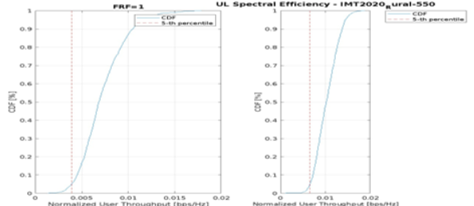

eMBB-s
As per Report ITU-R M.2514, the Enhanced Mobile Broadband (eMBB-s) usage scenario, in the context of the satellite component
of IMT-2020, should support high data rate applications in rural and remote areas, air and maritime
environments, and, in some cases, suburban areas. Terminal devices on the move, capable of
supporting communications at high velocity, should be supported to meet transportation needs and
their associated users. Specifically, the following cases are identified:
- Coverage continuity: Moving pedestrians (consumer smartphones) should be able to maintain access to a large range of communication services and applications while moving out to remote areas for example, remote working, leisure, etc.
- Connecting populations in unserved or underserved areas
- Connectivity to transport: Buses, trains, vessels (leisure or cruise), or airplanes
- Public safety: To provide communication services (e.g., messaging, voice, video) to emergency responders (e.g., fire brigade, medical personnel).
System Parameters, Simulation Setup and Interim Results for eMBB-s
The following table illustrates the evaluation assumptions for the simulation.
| Parameter | Value |
|---|---|
| Satellite orbit altitude | LEO 550 km |
| Satellite elevation angle | 90 deg |
| Inter-cell distance @ nadir | 44 km |
| Average cell area | 1749 km² |
| Satellite EIRP density | 34 dBW/MHz |
| Satellite antenna gain | 30 dB |
| Satellite G/T | 1.1 dB/K |
| Carrier frequency | 2 GHz |
| Channel bandwidth | 30 MHz |
| Subcarrier spacing (SCS) | 15 kHz |
| DL number of PRBs | 160 for FRF=1 / 52 for FRF=3 |
| UL number of PRBs | 16 for FRF=1 / 5 for FRF=3 |
| UE antenna gain | 0 dBi |
| UE noise figure | 7 dB |
| UE Tx power | (unspecified) |
| UE antenna temperature | 290 K |
| Losses due to scintillation/polarization/etc | 0 dB |
| UE outdoor probability | 1 |
| UE density | 10 per beam |
Typical eMBB-s deployment is depicted in the figure below. The figure shows a beam formed from the satellite on the ground. The following figure shows the main beam - HP Beam width, and the adjacent beam (interfering beam)-
The below figure shows the distribution of UE and the example of a FRF=1 and FRF=3 deployment case.
The wideband DL SINR CDF is shown in the following figure for both FRF=1 and FRF=3 case-
This figure shows the corresponding CDF of DL spectral efficiency for both FRF=1 and FRF=3.
The UL SINR CDF and the spectral efficiency for both FRF=1 and FRF=3 scenario can be observed in the below figure.

User Experienced Data Rate
User experienced data rate is the 5% point of the cumulative distribution function (CDF) of the user throughput. User throughput (during active time) is defined as the number of correctly received bits, i.e. the number of bits contained in the service data units (SDUs) delivered to Layer 3, over a certain period of time.
Assuming one frequency band and one layer of transmission reception points (TRxP), the user experienced data rate should be derived from the 5th percentile user spectral efficiency through the below equation. Let W denote the channel bandwidth and SEuser denote the 5th percentile user spectral efficiency. Then the user experienced data rate, Ruser is given by:
Ruser = W × SEuser
The minimum requirements according to Report ITU-R M.2514, and results are provided in the table below-
| Min. Requirement (Mbit/s) | Results for FRF=1 (Mbit/s) | Results for FRF=3 (Mbit/s) | |
|---|---|---|---|
| DL | 1 | 0.822 | 1.365 |
| UL | 0.1 | 0.1173 | 0.1968 |
Based on the assessment, NR NTN passes the requirement for FRF=3 only.
5th Percentile User Spectral Efficiency Evaluation
The 5th percentile user spectral efficiency is the 5% point of the CDF of the normalized user throughput. The normalized user throughput is defined as the number of correctly received bits, i.e. the number of bits contained in the SDUs delivered to Layer 3, over a certain period of time, divided by the channel bandwidth, and is measured in bit/s/Hz.
The following table lists the minimum requirements as per Report ITU-R M.2514 and the simulation results for 5th percentile user spectral efficiency.
| Min. Req. (bit/s/Hz) | Results for FRF=1 (bit/s/Hz) | Results for FRF=3 (bit/s/Hz) | |
|---|---|---|---|
| DL | 0.03 | 0.0274 | 0.0455 |
| UL | 0.003 | 0.00391 |
0.00656 |
Based on the assessment, NR NTN passes the requirement for FRF=3 only.
Average Spectral Efficiency Evaluation
Average spectral efficiency is the aggregate throughput of all users (the number of correctly received bits, i.e. the number of bits contained in the SDUs delivered to Layer 3, over a certain period of time) divided by the channel bandwidth of a specific band divided by the number of TRxPs and is measured in bit/s/Hz/TRxP.
In the context of a satellite component radio interface, a TRxP (transmission and reception point) refers to a beam generated by the satellite.
The channel bandwidth for this purpose is defined as the effective bandwidth times the frequency reuse factor.
The minimum requirements as per Report ITU-R M.2514, and the simulation results for Average Spectral Efficiency are provided in the table below-
| Min. Requirement (bit/s/Hz) | Results for FRF=1 (bit/s/Hz) | Results for FRF=3 (bit/s/Hz) | |
|---|---|---|---|
| DL | 0.5 | 0.629 |
0.525 |
| UL | 0.1 | 0.0727 | 0.103 |
Based on the assessment, NR NTN passes the requirement for FRF=3 only.
Area Traffic Capacity
Area traffic capacity is the total traffic throughput served per geographic area (in Mbit/s/km2). The throughput is the number of correctly received bits, i.e., the number of bits contained in the SDUs delivered to Layer 3, over a certain period of time.
This can be derived assuming one frequency band and one TRxP layer, based on the achievable average spectral efficiency, network deployment (e.g., TRxP (site) density) and bandwidth.
Let W denote the channel bandwidth and ρ the TRxP density (TRxP/m2). The area traffic capacity Carea is related to average spectral efficiency SEavg as follows:
Carea = ρ × W × SEavg
The following table provides the minimum requirements according to Report ITU-R M.2514 along with the evaluation results-
| Min. Requirement (kbit/s/km2) | Results for FRF=1 (kbit/s/km2) | Results for FRF=3 (kbit/s/km2) | |
|---|---|---|---|
| DL | 8 | 10.789 |
9.005 |
| UL | 1.5 | 1.247 | 1.767 |
Based on the assessment, NR NTN passes the requirement for FRF=3 only.